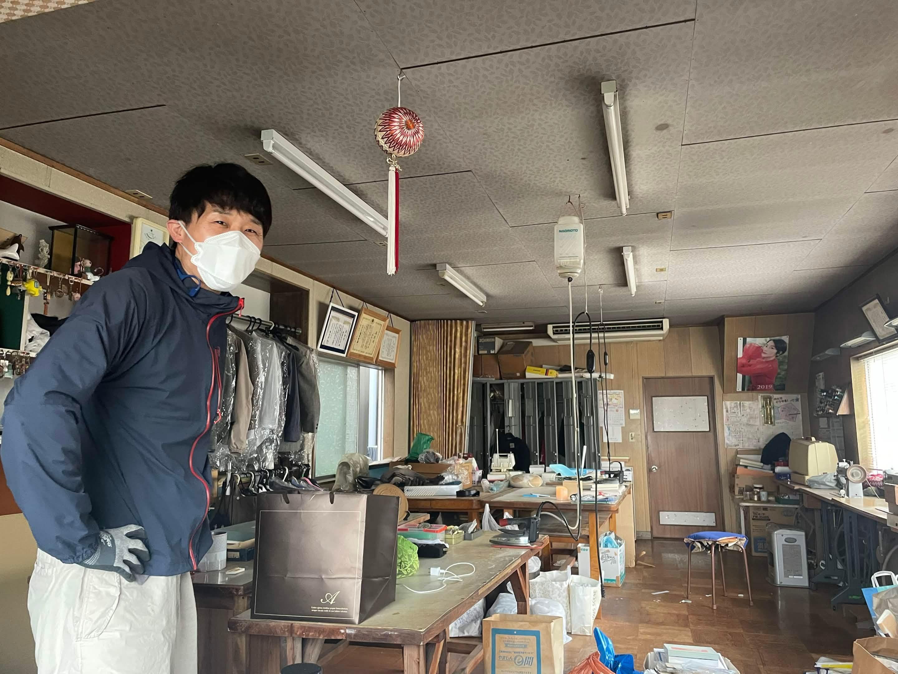

About
本業ガス屋12年目。新潟大学で建築を学び、設計事務所・ガス会社での経験を経て、鶴岡市で活動中。
設計し、自ら現場で手を動かし、修繕・メンテまで一貫して引き受ける「街の実働型設計屋」。空き家を買って、自分で直して、貸す。
📍 山形県鶴岡市
Service
空き家を買い、自ら手を動かして再生。設計から施工・竣工後のメンテまで一貫して担う。「設計して、はい終わり」じゃない。
ガス屋12年・建築士・電工の資格を掛け合わせた「なんでも屋」。庄内地域全域、最短当日対応。
設計・施工・補助金申請をワンストップで。複雑な書類も期間管理も、丸ごと引き受けます。
Project
鶴岡市・銀座通り徒歩1分。築53年・元洋装店「Saito」を、ほぼ1人で再生する記録。
アーチ型の入口に、くすんだ筆記体で「Saito」。
中に入ると、時間が止まっていた。
外注すれば済むことを、あえて自分で（資格の許す範囲で）。失敗もぼやきも全部記録する。
失敗も、遠回りも、「あ、これ設計ミスだった」も。免許持ちだからこそ詰まるポイントを、正直に記録する。
見た目だけでなく、直しやすさまで設計する。LCC（ライフサイクルコスト）を見据えた物件運営が強み。
最新の現場状況 — note連載「空家どうしよう」でも随時更新中
Roadmap
第1物件「Saito」着手。設計・解体・残置物処理。note連載「空家どうしよう」開始。
ほぼ1人で施工完走。賃貸物件として貸出開始。
住まいの便利屋（修繕・設備）と補助金代行を正式開始。連載と発信を継続。
2棟目・3棟目の空き家再生。オーナーと使い手のマッチングも。
鶴岡の「周波数を合わせる」場所として、空き家再生の拠点に。
Contact
空き家のこと、修繕のこと、補助金のこと。
ラジオへのお便りのように、お気軽にどうぞ。